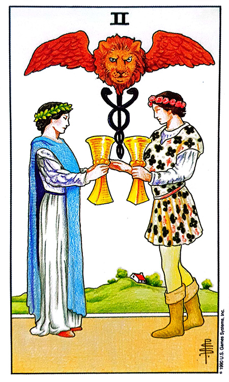
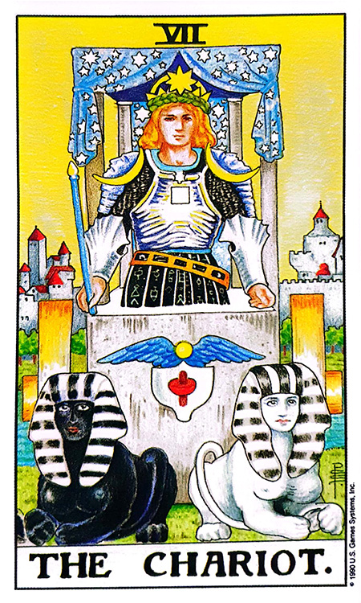

![핑크색 Pink 카드]()
REDSUN COLOR TAROT · STUDY NOTES
쉽고 재미있는 레드썬의 컬러타로 — 챕터 9 (149~161쪽)
“ 사랑받고 싶어요 ”(책 강조: 여성적 · 어머니의 색 · 다른(다른 사랑·다른 것·다른 일)에 빨간 밑줄 + 노란 형광펜, 순수 · 사랑 · 보호에 노란 형광펜. 표어 옆 빨간 손글씨 “다른…”)
이 챕터의 표어는 “사랑받고 싶어요”입니다. Pink는 빨강(Red)과 하양(White)이 만난 색으로, 두 색의 특성과 핑크 고유의 특성을 함께 가집니다.
Pink 컬러 하면 많은 사람들이 사랑에 대해 떠올립니다. Pink빛 사랑은 열정적인 사랑이기보다는 때묻지 않은 순수함의 사랑입니다.
Pink 컬러의 파스텔과 밝은 톤이 부드러움과 섬세함을 전달합니다. 이 부드러운 색상은 어두운 색상의 대담함과 강렬함이 없기 때문에 순수함을 나타냅니다.
역사를 통해 분홍색은 다양한 문화와 예술적 표현에서 순수함을 나타내는 데 사용되었는데, 종교 예술에서 분홍색은 때때로 성모 마리아의 순결과 관련이 있습니다.
낭만적인 맥락에서 분홍색은 첫사랑의 순수함이나 관계의 부드러운 시작과 관련됩니다. Pink빛 사랑은 달달함이 느껴지는 낭만적인 사랑으로, 꽃을 주거나, 진심 어린 메모를 쓰거나, 깊은 애정과 감사를 표현하거나, 멋진 이벤트를 계획하는 것과 같은 낭만적인 사랑입니다.
또한 Pink의 사랑은 다른 사람을 이해하고 연결하는 동정심 많고 공감적인 특징이 있는데, 어머니의 사랑과 같이 모성애적인 수용성과 포용성, 조건 없는 사랑 등의 특징이 나타날 수 있으며 보호하고 보호받으려 할 수 있습니다. (책 노란 형광펜)
한 예능 프로그램에서 아들이 분홍색 치마를 고르며 공주가 되고 싶다고 말하자 아빠가 아들의 취향을 응원하고 지지한다고 했습니다. 이를 두고 지지하는 사람들과 “아들은 아들답게 키워야 한다”며 지적하는 사람들 사이에 작은 논란이 있었습니다.
1897년 <뉴욕 타임스>에 실린 기사에 따르면 분홍은 대개 남자아이의 색으로, 파랑은 여자아이의 색으로 간주되었다는 것을 알 수 있으며, 19세기 전반 영국 빅토리아 여왕의 가족사진을 보면 첫째 에드워드 왕자는 붉은색 옷을 입고 있습니다.
하지만 시간이 흐르면서 점차 많은 서구 문화권에서 분홍색은 소녀와 여성성과, 파란색은 소년과 남성성과 관련이 있었습니다. 핑크는 부드러우며 보살핌을 주는 색상으로 간주되며, 이는 전통적인 여성성에 대한 개념과 일치하며 정서적·심리적 연관성은 여성성을 대표하게 되었습니다.
대중문화 속에서 여성성과 관련된 캐릭터와 테마는 종종 핑크색 요소로 묘사되어 연결을 더욱 강화했으며, 기업의 광고주들은 핑크를 소녀들의 장난감·의류에 자주 사용하여 색상과 여성성의 연결을 강화했습니다.
이러한 연관성은 색상 자체에 내재된 것이 아니라 문화적 규범과 역사적 발전에 의해 형성된 사회적 구조입니다. 최근에는 엄격한 성별 고정관념을 깨고 보다 포괄적이고 다양한 성별 표현을 촉진하려는 움직임이 있었으며, 그 결과 핑크와 여성성 사이의 연관성은 해석의 여지가 더 넓어지고 있으며 남성과 여성 모두의 색으로 발전되어 왔습니다.
분홍색은 레드와 화이트가 만난 색입니다. 분홍색에는 레드의 특성과 화이트의 특성, 그리고 이 두 색이 합쳐진 분홍의 고유한 특성이 있습니다. 레드의 공격적이고 폭력적인 특성을 화이트가 차분하게 만들어 줍니다. 핑크는 따뜻하고 편안한 색으로서 화를 완화시키고 침착하고 편안하게 안심시키는 색입니다.
1970년대 말 알렉산더 샤우스 박사의 연구에 따르면, 미국의 한 교도소에서 공격적이고 폭력적인 죄수들을 핑크색 방안에 있게 하거나 핑크색 옷을 입혔을 때 공격적인 특성이 사라지고 차분해진다는 연구결과가 있었습니다.
한 방송 프로그램에서 일본인 다쿠야는 일본 에히메현 여성 전용 교도소가 실내를 핑크색으로 꾸몄다고 언급하며 사진을 공개했는데, 문과 창틀·이불·죄수복까지 핑크색으로 꾸며져 있는 것을 알 수 있었습니다.
한편 우리나라의 경우 여성 모범수들에게 핑크색 죄수복을 입힙니다. 죄수가 아니더라도 보호가 필요한 이들에게 안정감을 주고 “다 잘 될 수 있다”는 메시지를 주는 색입니다. 산부인과나 산후조리원에서 산모들의 옷이나 침실 등에 많이 사용되기도 합니다.
공격적인 아이가 있다면 차분하게 변화할 수 있도록 핑크색 옷을 입히는 것도 한 방법입니다.
제2차 세계대전 중 독일의 나치는 동성애를 포함한 다양한 집단을 박해했습니다. 게이 남성은 체포되어 강제수용소로 보내졌고, 수감자들은 수감된 이유를 표시하기 위해 다양한 색상의 삼각형으로 분류되었습니다. 게이 남성은 분홍색 삼각형을 식별자로 착용하도록 만들어졌습니다.
제2차 세계대전 이후 수십 년 동안 분홍색 삼각형은 동성애의 저항과 회복력의 상징으로 표현되었으며, 고통받는 사람들을 기억하고 동성애 권리를 위한 지속적인 투쟁에 대한 인식을 높이는 방법이 되었습니다.
캐나다에서는 2월 마지막 수요일에 Pink Shirt Day가 열립니다. Pink Day 또는 Anti-Bullying Day로도 알려진 이 날은 캐나다에서 시작된 연례 행사로, 현재 세계 여러 국가에서 행해지고 있습니다. 주요 목적은 괴롭힘에 대한 인식을 높이고 학교·직장·지역 사회에서 괴롭힘을 방지하는 것입니다.
기원은 2007년 캐나다 노바스코샤의 두 고등학생 데이비드 셰퍼드(David Shepherd)와 트래비스 프라이스(Travis Price)입니다. 등교 첫날 분홍색 셔츠를 입었다는 이유로 괴롭힘을 당한 동료 학생을 지지하기 위해, 두 학생은 연대를 보여주고 괴롭힘에 맞서기 위해 급우들에게 분홍색 셔츠를 사서 배포했습니다. 이 행위는 금세 주목을 받아 Pink Shirt Day의 탄생에 영감을 주었고 지금은 캐나다 전국민의 축제로 거듭났습니다.
분홍색은 화이트와 레드가 만나 이루어진 색입니다. 화이트와 레드는 서로 심리적 반대색으로 분류되는데, 이처럼 분홍색은 서로 완전히 다른 두 개의 특성이 존재한다는 것입니다.
겉으로는 화이트가 감싸고 있지만 안에는 레드가 불타오르고 있습니다. 이것은 종종 타로 상담을 할 때 그 특성이 나타나는데, 완전히 다른 것을 한다는 의미입니다.
일부 문화권에서 분홍색은 전통적으로 양육, 모성 및 보호로 간주되는 특성과 관련이 있습니다. 그것은 보호의 한 형태로 볼 수 있는 보살핌과 부드러움의 감정을 불러일으킬 수 있습니다.
핑크 리본은 유방암의 영향을 받는 사람들을 위한 지원·관리·보호를 나타내며 질병에 대한 인식을 높이는 것을 목표로 합니다. 이처럼 분홍색은 괴롭힘 방지, LGBT 권리 증진, 사회 및 건강 문제에 대한 인식 제고를 위한 노력과 연관될 수 있습니다.
나를 보호하고 내가 보호해야 하는 색으로서, 나에게 도움을 주는 “귀인의 존재”를 말하기도 합니다.
| # | 성격 특징 |
|---|---|
| 1 | 친절하고 따뜻한 사람입니다. |
| 2 | 애정이나 감정이 남들보다 풍부한 사람입니다. |
| 3 | 상냥하지만 쉽게 상처받을 수 있습니다. |
| 4 | 미지의 매력이 있으며 남자를 진정한 남자로 만들어 줍니다. |
| 5 | 사랑스럽고 로맨틱하며 감각적이고 세심합니다. |
| 6 | 모성애가 있으며 다른 사람들을 잘 보살피고 보호해 줍니다. |
| 7 | 항상 긍정적이고 다른 사람의 좋은 점을 보는 특성이 있습니다. |
| 8 | 나이보다 젊어 보이며 비폭력적이고 차분합니다. |
| 9 | 친구를 넓은 마음으로 다독거리며 이해해 주는 사람입니다. |
| 10 | 동화 같은 로맨틱한 사랑을 꿈꿉니다. |
| 11 | 충동적이기보다는 체계적·조직적·신중한 사람입니다. |
| 12 | 여성적인 매력이 있으며 어머니 같은 모성애가 강합니다. |
| 13 | 장점과 단점에 대하여 치밀하게 계산하며, 속마음과 겉모습을 유능하게 조절할 줄 아는 상당한 처세가입니다. |
| 14 | 표면적으로는 온화·조화를 외치지만 속마음은 상당히 승부에 대한 열의로 가득 찬 성격이기도 합니다. |
| 15 | 자립심이 부족하여 스스로 행동하기보다는 상대에게 기대려는 특성이 있습니다. |
“사랑받고 싶어요” — 친절·모성애·로맨틱·차분함·긍정의 부드러운 면과, 속마음의 승부열·치밀한 계산·의존성·쉽게 상처받음의 이중적 면이 함께 존재합니다. 겉은 화이트, 속은 레드 — 이중성이 핵심입니다.
| 카드 조합 | 핵심 한 줄 | 상세 해석 |
|---|---|---|
 II of CUPS (컵 2) + Pink |
천생연분 · 소개로 만남 | 하늘이 맺어준 천생연분의 사랑입니다. 순수한 마음으로 서로를 사랑하고 있으며 마음도 잘 통하고 달콤한 사랑을 하고 있습니다. 서로만을 바라보고 있고 만나면 마음이 편안해지고 행복합니다. 스트레스 받는 일이 있어도 그 사람만 만나면 마음이 차분해지고 안정됩니다. “애인을 만날 수 있을까요?” 질문이라면 누군가의 소개로 천생연분의 사람을 만나게 될 것입니다. |
 0 THE FOOL (광대) + Pink 0 THE FOOL (광대) + Pink (과거 자리) |
순수한 사랑의 시작 or 딴 사람 | 연애운에서 이런 조합이라면 스프레드의 위치나 그 사람의 상황에 따라 해석이 완전히 달라질 수 있으니 해석에 유의해야 합니다. 사랑하는 사람이 있고 과거 자리에 나왔다면 과거에 순수하게 아름다운 사랑이 시작되었다는 것입니다. 그런데 이 배열 바로 뒤에 안 좋은 카드들이 나왔다면, 아름다운 사랑이 시작되었다기보다 지금 만나는 사람이 아닌 다른 사람이 시작되었다는 것을 의미할 수도 있습니다. |
| 0 THE FOOL (광대) + Pink (미래 자리) |
방해 해결 또는 바람 | 이 배열이 미래 자리에 나왔다면 지금 이들의 연애를 방해하는 문제가 해결되고 아름다운 사랑이 시작될 수도 있고, 또는 다른 사람을 만나게 될 수도 있습니다. 즉 바람이 날 수도 있다는 것입니다. 그것은 앞에 어떤 카드들이 나오느냐에 따라 달라지니 앞 카드들을 잘 분석해야 합니다. |
| 카드 조합 | 핵심 한 줄 | 상세 해석 |
|---|---|---|
 X of CUPS (컵 10) + Pink X of CUPS (컵 10) + Pink |
가족·유산 · 재정 양호 | 핑크의 레드는 돈의 이동이 활발하고 적자를 나타내지만, 화이트가 이를 적절하게 완화시켜주어 적자를 보지는 않습니다. 현재 재정상태는 양호한 편입니다. 가족과 함께 금전 활동을 하고 있거나 가족 문제로 지출할 일이 생길 수 있습니다. 유산을 물려받을 수도 있으며 도움을 주는 사람들이 있습니다. |
 VII THE CHARIOT (전차) + Pink |
선택하라 — 이직·업종 변경 | (손글씨: “전차(선택해라)”) 지금 하고 있는 금전 활동을 계속해야 하는지 다른 일을 해야 하는지 고민하고 있습니다. 직장을 다니고 있다면 이직을 생각하고 있고, 장사를 하고 있다면 업종 변경이나 가게 이전을 생각하고 있습니다. 나름대로 돈을 창출해내는 능력은 있지만 적극적이지 않기에 본인의 능력에 비해 소득이 크지는 않습니다. 본인이 돈을 벌겠다는 의지가 강하다면 돈을 벌 기회가 생길 것이며 주위에서 도움을 주는 사람이 있습니다. |
Sky와 마찬가지로 핑크의 매매는 같이 보는 유니버셜 웨이트 타로의 영향을 많이 받습니다. 화이트가 때를 잘 타는 색이기 때문입니다.
| 카드 조합 | 핵심 한 줄 | 상세 해석 |
|---|---|---|
| 긍정 타로 + Pink (매매운) |
귀인의 도움으로 성사 | 긍정적인 유니버셜 웨이트 타로와 나온다면 누군가의 도움으로 매매가 성사될 것입니다. |
| 부정 타로 + Pink (매매운) |
성사 어려움 | 부정적인 유니버셜 웨이트 타로와 나온다면 매매가 성사되기 어렵습니다. |
| 긍정 타로 + Pink (합격운) |
안정적 합격 | 합격운이라면 긍정적인 유니버셜 웨이트 타로와 나온다면 안정적인 성적으로 합격의 가능성이 큽니다. |
| 부정 타로 + Pink (합격운) |
불합격 — 의지·의욕 부족 | 부정적인 유니버셜 웨이트 타로와 나온다면 불합격될 것입니다. 이유는 유니버셜 웨이트 타로의 분석이 필요하고, 핑크는 본인이 스스로 노력하기보다는 남들에게 의지하려는 모습이 있었고 하려고 하는 의욕이 부족했기 때문입니다. |
 V THE HIEROPHANT (교황) + Pink V THE HIEROPHANT (교황) + Pink |
서로 다른 생각 · 전문가 필요 | 매매운에서 이 배열이라면 서로 다른 생각을 하고 있는 것입니다. 매입하려는 사람과 매수하려는 사람의 마음이 다르다는 것입니다. 서로 원하는 금액이 다르기에 쉽게 조절이 안 되고 있습니다. 지금의 상황으로는 매매가 쉽지 않으니 전문가의 도움이 필요합니다. 부동산업자나 매매를 연결해주는 사람의 조율이 필요합니다. 합격운이라면 역시 합격하기 위해서는 지금까지와는 다른 방식의 준비가 필요한데 전문가의 도움이 필요합니다. 전문 학원이나 선생님의 조언을 잘 듣고 따를 필요가 있습니다. |
사업운에서도 핑크는 같이 사용하는 유니버셜 웨이트 타로의 영향을 많이 받습니다. 핑크의 색으로 보면 긍정적인 특성이 강하지만, 레드의 문제를 화이트가 제어해주고 있는데 화이트에 때가 탄다는 것은 화이트의 완화 작용이 약해지며 레드의 부정적인 특성이 강해진다는 것입니다.
| 카드 조합 | 핵심 한 줄 | 상세 해석 |
|---|---|---|
 III THE EMPRESS (여황제) + Pink III THE EMPRESS (여황제) + Pink |
안정적 · 여성·사랑 관련 사업 | 사업에서는 The Empress 카드와 같이 긍정적인 유니버셜 웨이트 타로와 같이 나온다면 지금의 상황이 괜찮습니다. 사업에 도움을 주는 사람이 있으며 큰 돈을 벌지는 않지만, 안정적이고 편안하게 사업이 진행되고 있습니다. 여성이나 사랑과 연관된 사업일 수 있으며, 지출관리를 조금만 더 신경 쓴다면 지금보다 더 안정적으로 사업이 진행될 것입니다. |
핑크색은 여성이나 패션, 어머니, 로맨스, 보호와 연관된 직업이 어울립니다.
| 항목 | 내용 |
|---|---|
| 기본 원칙 | 보호가 필요한 병과 연관됩니다 — 어린이·노인·여성 등 돌봄의 대상. |
| 주의 질환 리스트 | 노인병(치매, 관절 등) · 청소년 문제 등 보호가 필요한 병 · 부인과 질환 · 공주병 등 |
| # | 룰 | 내용 |
|---|---|---|
| 1 | “완전히 다르다” | 화이트+레드의 반대색 합성 → 연애=지금 아닌 다른 사람 / 일=지금 아닌 다른 일. Pink가 나오면 “다른 무엇”을 의심하라. |
| 2 | 귀인의 존재 | 보호의 색 = 나를 도와주는 귀인의 존재. 매매·사업에서 “누군가의 도움”이 결정적. |
| 3 | 동반 타로 영향 | 화이트는 때를 잘 탄다 — 매매·사업·합격은 같이 보는 유니버셜 타로의 긍정/부정에 크게 좌우. |
| 4 | 순수 사랑 · 모성애 | Pink빛 사랑 = 열정 대신 순수·달달함·모성애·조건 없는 사랑. 성모 마리아·첫사랑의 이미지. |
| 5 | 안정 · 차분함 | 레드의 공격성을 화이트가 완화 → 공격적 죄수·산모·아이를 진정시키는 색. Pink Shirt Day = 괴롭힘 방지. |
| 섹션 | 핵심 명제 |
|---|---|
| 기본 | “사랑받고 싶어요” · 키워드 17 — 여성적·순수·사랑·보호·어머니·다른(사랑/것/일)·로맨틱·젊음. |
| Pink빛 사랑 | 열정 아닌 때묻지 않은 순수 · 성모 마리아의 순결 · 첫사랑·모성애·조건 없는 사랑. |
| 여성성 | 1897 NYT: 원래 분홍=남아 색 → 20C 이후 여성성의 색으로 사회적 구축 · 최근엔 남녀 공용. |
| 안정·차분함 | 샤우스 박사 연구: 공격적 죄수 → 핑크방·핑크옷으로 차분 · 일본 에히메현 여성 교도소 · 한국 여성 모범수 · 산부인과. |
| 핑크 셔츠데이 | 나치의 분홍 삼각형(게이 식별자) → 저항의 상징 · 2007 캐나다 셰퍼드·프라이스 → 2월 마지막 수요일 Anti-Bullying Day. |
| 완전히 다르다 | 겉은 화이트, 속은 레드 → 연애=딴 사람 · 일=딴 일. Pink 등장 시 “다른 무엇”을 의심. |
| 보호·귀인 | 핑크 리본(유방암) · LGBT 권리 · 귀인의 존재 — 나를 보호하고 내가 보호하는 색. |
| 연애 | 컵2+Pink=천생연분·소개 만남 / 광대+Pink = 위치에 따라 순수 사랑 시작 OR 딴 사람·바람. |
| 금전·매매·합격 | 컵10=가족·유산·양호 / 전차=선택하라(이직/업종 변경) / 교황=서로 다른 생각·전문가 필요 / 합격=긍정 시 안정, 부정 시 의지 부족. |
| 사업·진로·건강 | 여황제+Pink=여성·사랑 사업 안정 / 진로=뷰티·패션·웨딩·유치원·요양 / 건강=보호가 필요한 병(노인·청소년·부인과·공주병). |